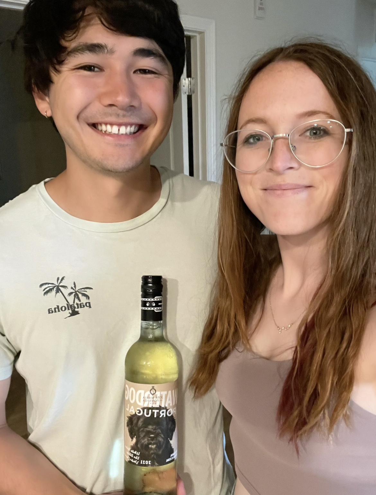

Fernāo Pires

What is it?
Fernāo Pires is a white grape grown primarily in Portugal [1]. It is sometimes known as Maria Gomes. Fernāo Pires is known for its aromas of lemon, lime, and orange zests, though honey and mineral flavors are common with aging [3]. This grape is often used as one component of white blends (which is how we tried it). We found Waterdog from José Maria da Fonseca, which is a winery in Azeitão just southeast of Lisbon.
Primary flavors of the Fernāo Pires grape are lime, peach, orange blossom, honeysuckle, and clove [2]. Our wine is 75% Fernāo Pires, and 25% Moscatel Graúdo. We paired this wine with a cheddar cheese containing chili and peppers from The Welsh Rabbit Cheese Shop in Fort Collins, Colorado. We found this wine at Wilbur's Total Beverage, also in Fort Collins, on a short trip to Northern Colorado to see some family and enjoy the mountains.
Molly's Rating and Tasting Notes
7.6. A pleasant white wine. I get some cantaloupe on the nose and some lime and honey on the tongue. It's very mild as a whole. The finish is over very quickly, and all that is left is a memory of saline and rainwater.
Ryan's Rating and Tasting Notes
7.6. On the nose, I get some cantaloupe as well as bits of orange and honeysuckle. Upon tasting I get little bits of lime, honeydew, orange, and hints of minerality. In particular, there is some salinity towards the end. Overall there's not a whole lot of anything in particular going on with this wine. The body is very light, the flavor is very delicate, and the aftertaste is very short. It's a nice, easy wine to have on a hot summer day.
References
[1] Madeline Puckette and Justin Hammack. Wine Folly: The Master Guide. Avery - A Penguin Imprint, New York, NY, 2018.
[2] "Fernāo Pires." Wine Folly. https://winefolly.com/grapes/fernao-pires/. Accessed: June 2023.
[3] J. Robinson (2006).
Wines we haven't finished
- Frappato -- Week 21